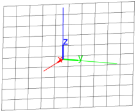

26.16.6 Polar reciprocal
The
reciprocation
command finds poles and polars.
reciprocation
takes two arguments:
C
, a circle.
L
, a list of points and lines.
reciprocation(
C
,
L
)
returns the list formed by replaced each point or line in
L
by its polar or pole with respect to the circle
C
.
Example
C
:=
circle
(0,1);
P
:=
point
((1+
i
)/2);
L
:=
line
(1,-1+
i
);
RP
,
RL
:=
op
(
reciprocation
(
C
,[
P
,
L
]))
